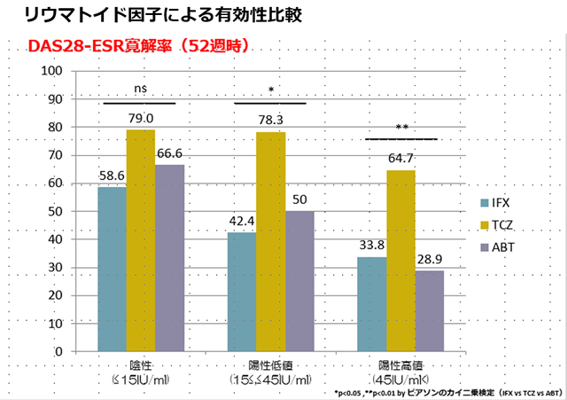
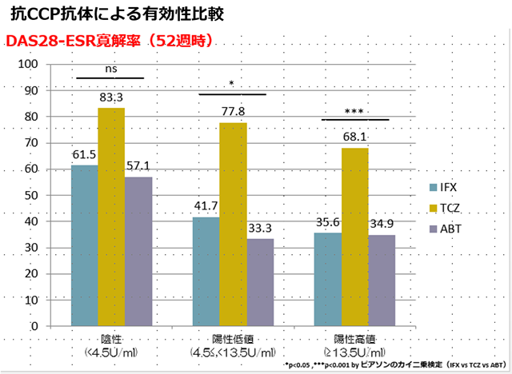

対オレンシア②セロポジ
アクテムラはRF/ACPA±に関係なく、DAS28寛解率が他剤に比して高い
（TCZ/TNF/ABTとの比較）
リウマトイド因子による有効性比較

抗CCP抗体による有効性比較

抗CCP高値であるとABTの有効性が高いという報告があるが、異なる結果であった
アクテムラはRF/ACPA±に関わらず、有効であり最も有効性が高かった
対オレンシア②セロポジ
リウマトイド因子による有効性比較
抗CCP抗体による有効性比較
抗CCP高値であるとABTの有効性が高いという報告があるが、異なる結果であった
アクテムラはRF/ACPA±に関わらず、有効であり最も有効性が高かった